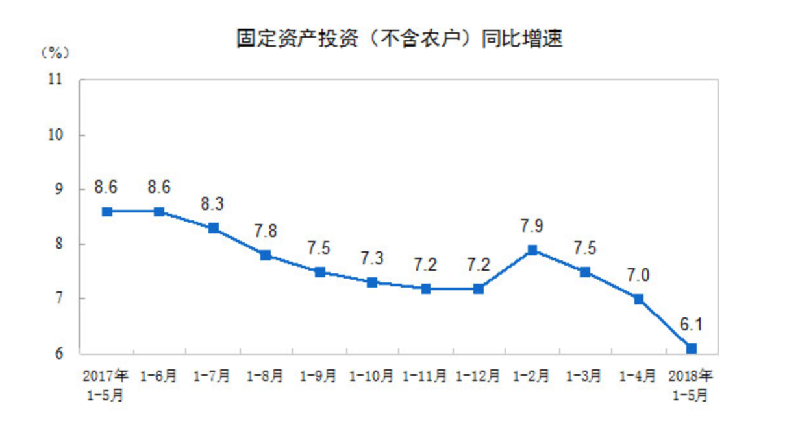
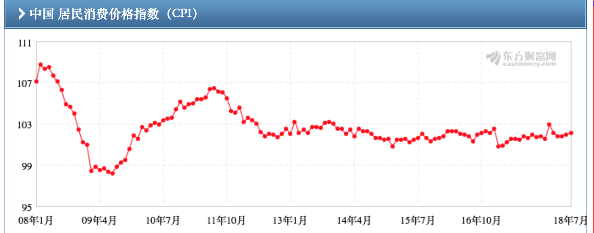
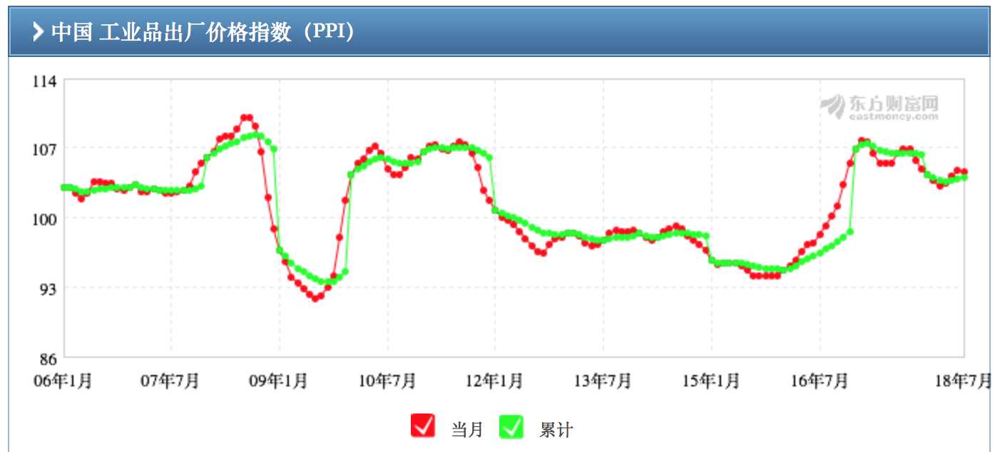

9. 经济形势差的时候该买什么？
相比于经济形势好，经济形势不好的情况会稍微复杂一些，正如托尔斯泰那句经典的名言，“幸福的家庭都是相似的, 不幸的家庭各有各的不同”。这句话用在今天这节课上，就是“经济形势的好都是相似的，经济形势的不好各有各的不同”。
我们先来区分，经济形势不好如何定义？有几种类型？
经济形势不好的描述包括三个部分。第一个，是实体经济运行的不好，包括实体投资、消费与经济增长的全面疲软，具体可以看上节课提到的 GDP 增速、固定资产投资增速、社会消费品零售总额增速；第二个，是物价的不稳定，包括物价下跌的通缩和物价快速增长的通胀，具体可以看每月公布的 CPI 和 PPI数据；第三个是投资情绪的不好，也就是金融投资的风险偏好大幅下滑，这个可以直接观察 A 股市场的表现。
从这些指标入手，就可以看出三个部分的不同组合，就会形成三种典型的经济弱周期。第一种是经济形势通缩式的不好，包括经济不好、物价下滑的通缩、投资情绪不好，但还不至于全面恐慌；第二种是经济形势通胀式的不好。包括经济不好、物价快速上涨的通胀、投资情绪不好但也还不至于全面恐慌；第三种是恐慌式的不好。包括经济不好、物价无论涨跌，金融投资的恐慌情绪浓厚，大多是经济危机状况。
VeryCB 注：GDP 增速和社会消费品零售总额增速上节课分享过了，刚才看了一下固定资产投资增速，目前也处于下行状态。

CPI 是居民消费价格指数（consumer price index）的简称，用来反映居民家庭所购买的消费品和服务项目价格水平变动情况，其变动率在一定程度上反映了通货膨胀或紧缩的程度。一般来讲，物价全面地、变化对比、持续地上涨就被认为发生了通货膨胀。
PPI 是生产价格指数（Producer Price Index—PPI），用来衡量工业企业产品出厂价格变动趋势和变动程度，是反映某一时期生产领域价格变动情况的重要经济指标，也是制定有关经济政策和国民经济核算的重要依据。PPI 与 CPI 不同，主要的目的是衡量企业购买的一篮子物品和劳务的总费用。由于企业最终要把它们的费用以更高的消费价格的形式转移给消费者，所以通常认为 PPI 的变动对预测 CPI 的变动是有用的。


三种类型之下，选择资产的要义是什么？应该选择什么资产？
第一种类型，也就是经济通缩式的不好中，由于物价下跌，需求不好，企业都将面临营收下滑与亏损，从而进一步打压企业实体投资的扩张，进一步加剧了经济的不好，这是一个经济的内在循环，一般而言，宏观的货币政策处于逆向调节的目的必须要终止这种负向循环，因此会放松货币，通过货币供给的增加来改善物价的下跌，从而修复企业的盈利。
在经济通缩型不好的情况下，选择资产的方法，是在所有资产盈利都降低的情况下，去追逐价格反而走高的，同时分享货币宽松红利的资产——也就是债券。
债券的定价核心，是未来约定的利息及本金偿还的折现价值。分子端的利息和本金在债务生成之时就已经明确约定，不会再存在变动。因此核心是分母端的折现利率就成为了关键因素。利率越高，债券价格越低，因为一样的本金折现金额会变少；利率越低债券价格越高，因为一样的未来本金折现金额会增加。如果听起来比较繁琐，其实核心就是一条，利率走高，债券价格会下跌，利率走低，债券价格会上升。
通缩型不好的背景下，首先，债券的定价本就会上升，经济不佳的时候，意味着企业借钱扩张投资的动能会弱化，那么整个宏观体系，大家都不借钱，利率就会下滑，还记得刚刚所说的债券定价机制吗？债券价格因此就会上升。其次，债券可以分享到货币宽松的的红利，如果此时货币宽松，那么意味着宏观体系中钱更多了，利率会进一步下滑，债券价格进一步上升。
第二种类型，在经济通胀式的不好之中，经济增速已经开始下滑，但物价还在高速增长，就是典型的滞涨形态，会严重冲击居民家庭与社会稳定。一方面居民的支出端由于物价飞涨面临购买力下滑，另一方面居民的收入端由于经济增速下滑，失业率上升或者薪金下降造成大幅下滑。一般而言，宏观的货币政策出于逆向调节的目的要控制物价飞涨，因此会收紧货币，通过货币供给的减少来抑制物价的上涨，从而平稳居民的支出端，维护社会稳定。
在这个类型中，选择资产的要义是抗通胀，同时这个资产可以尽量躲避货币紧缩的冲击——也就是黄金。
黄金的一个重要属性是硬通货，也是最为原始的硬货币，即便在各国已经纷纷拥有各自信用货币的情况下，黄金储备仍然是各国政府硬通货储备中重要的一部分。当物价飞涨，通胀压力增加的时候，不管手里拿着哪个国家的货币，都会面临着购买力的侵蚀的风险。而在这个时候，黄金硬通货的属性和抗通胀能力就凸显出来了。同时，由于政府在对抗通胀时，大概率会选择货币政策紧缩，那么所有金融资产都将面临水落船低的下跌，黄金可以躲避货币紧缩的冲击。
第三种类型，也就是恐慌式的不好的情况下，经济不好是大基调，此时无论通胀是涨跌，更为重要的是金融投资的恐慌情绪浓厚，一般来说，经济危机时都是这样的情况，所有资金都在撤离，大家对于经济危机的持续时间和范围都非常悲观。
在这个类型中，选择资产的要义是避险，因为资金在撤离全部资产，恐慌情绪带来的金融资产的踩踏效应会错杀一切资产——那么最佳的选择是现金类资产。
当经济处于经济或金融危机当中，恐慌情绪浓厚，此时由于各个部门的资产负债表都面临较大的冲击，都有强烈的资产变现欲望，在恐慌情绪中，对于整个金融投资市场，就将是一场大家纷纷离场夺门而出的场景。在这个过程中，所有资产的理性定价逻辑都将会被破坏，变现是第一位的，也就是华尔街所说的“cash out”。在这样的恐慌之中，现金虽然本身没有任何收益，但却可以躲避一切下跌风险，数害相权取其轻，现金为王。
说了这么多，总结起来也很简单，就是经济不好的时候，债券、黄金、现金是整体表现更为优异的资产。如果经济是通缩式的不好，那么债券最优；如果是通胀式的不好，那么抗通胀的黄金最优；如果是危机状态的恐慌性不好，那么避险的现金是最优选择。